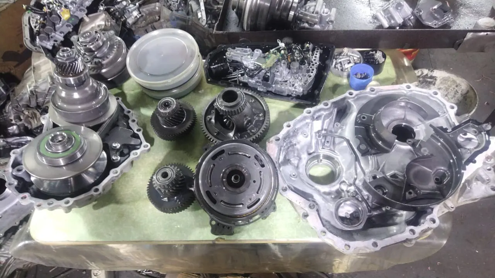
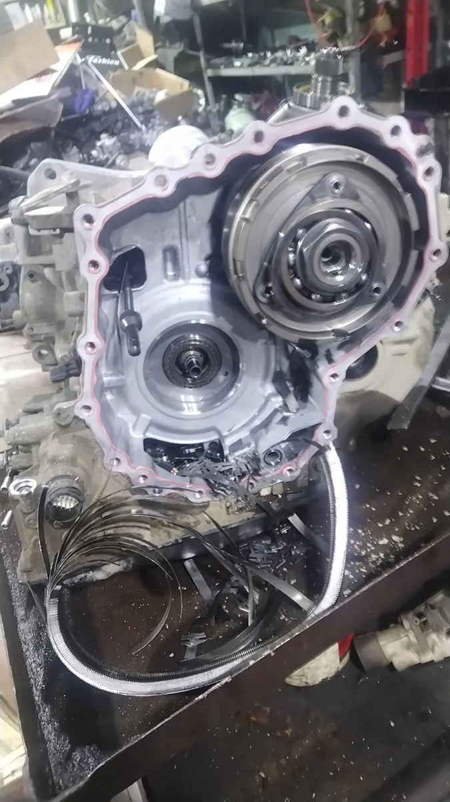
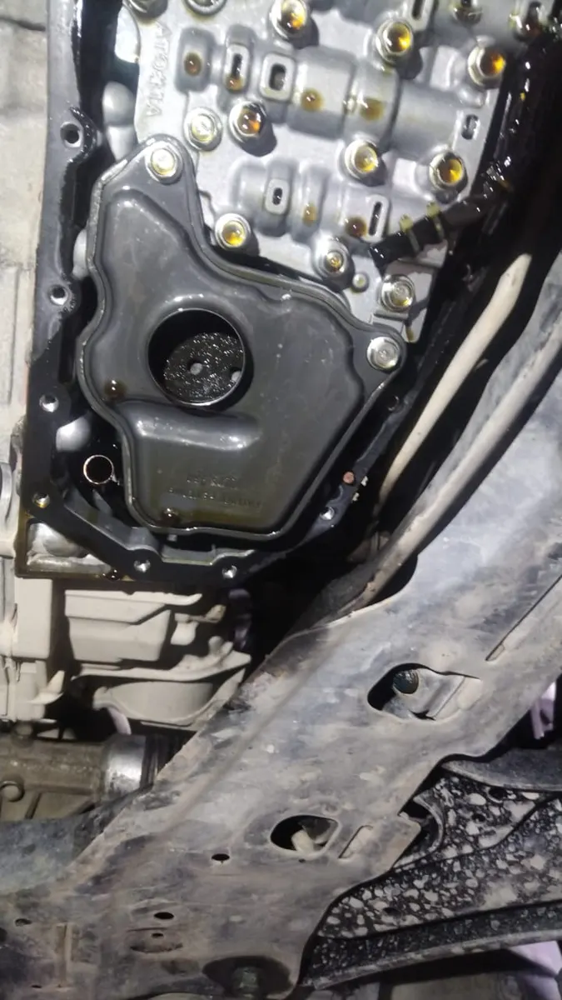
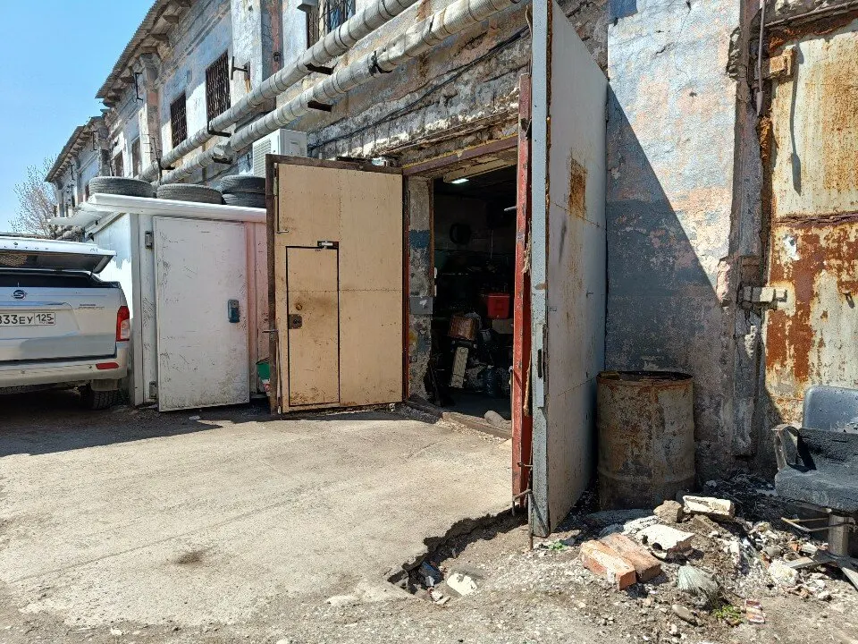

Ремонт АКПП и вариаторов · Владивосток
Ремонт АКПП и вариаторов во Владивостоке
Выберите услугу, день и время - чат откроется с готовым текстом. Коробки японских автомобилей, замена масла, запчасти в наличии и под заказ.
- Пн-сб с 9:00 до 20:00
- Рейтинг 5,0, 81 оценка
- Скидки на замену масла постоянным клиентам

Что ещё есть
Входит
- Оригинальное масло на разлив и фильтры под вариатор
- Программа скидок на замену масла для постоянных клиентов
- Оплата картой, СБП, наличными, рассрочка
- Парковка
Отдельно, если нужно
- Предварительная запись
- Гарантия по карточке
- Мастера объясняют причину поломки
Услуги
На карточке на Яндекс.Картах прайса нет, поэтому на демо цены стоят «уточнить». Здесь удобно показать их до звонка.
Коробки передач
- Ремонт АКППОсновная рубрика карточки.уточнить
- Ремонт вариатораКлиенты пишут про вариаторы на Toyota, Nissan и Mitsubishi.уточнить
- Ремонт КПП и РКППВиды работ карточки.уточнить
- Ремонт DSGВиды работ карточки.уточнить
- Ремонт сцепленияВиды работ карточки.уточнить
- Ремонт гидротрансформаторов и гидроблоковУказано в особенностях карточки.уточнить
Масло и запчасти
- Замена маслаКлиенты пишут про оригинальное масло на разлив и скидки на замену.уточнить
- Компьютерная диагностика автомобиляВиды работ карточки.уточнить
- Запчасти и комплектующие под заказКлиенты пишут, что нужные запчасти обычно в наличии.уточнить
Перечень услуг составлен по видам работ карточки и отзывам клиентов, прайса на карточке нет. Актуальные цены уточняйте при записи.
Как записаться
- 01
Выберите услугу, день и время
В блоке записи вверху страницы.
- 02
Нажмите «Записаться»
Откроется чат с готовым сообщением - останется его отправить.
- 03
Дождитесь подтверждения
Мастер уточнит марку автомобиля и время.



Что говорят клиенты
Японские коробки
Клиенты приезжают с Toyota, Nissan и Mitsubishi.
Запчасти в наличии
Клиентка пишет, что всё в наличии и не пришлось ждать неделями.
Находят причину
Клиенты пишут, что мастера быстро выявили причину рывков.
Скидки на масло
Постоянным клиентам скидки на замену масла.
Отзывы с Яндекс.Карт
«Недавно столкнулась с проблемой — вариатор моей Toyota RAV4 начал дёргаться и переключаться рывками. Обратилась в FTC по совету знакомого. Мастер Максим провёл диагностику и оперативно выявил причину. Оказалось, нужно было заменить фильтр и масло. В FTC всё было в наличии, включая оригинальное масло на разлив! Ремонт сделали быстро и качественно, теперь коробка работает как новая.»
Дарья Овчинникова · 7 мая 2025
«Обращалась по поводу ремонта вариатора на своей Toyota Corolla. До этого где только не была, никто толком не мог определить причину дерганий. Максим выявил проблему, оперативно подобрал нужные запчасти. Что особенно порадовало – всё в наличии, не приходится ждать неделями. Теперь коробка работает как новая! Постоянным клиентам у них скидки на замену масла.»
Миса Метина · 26 февраля 2025
«Недавно заметил, что на светофорах машина дергалась при старте. Приехал на диагностику, и оказалось, что проблема с вариатором. Мне быстро поменяли цепь и масло. Ребята работали оперативно и профессионально. Теперь моя машина движется плавно, как новая!»
Антон Кириллов · 12 декабря 2024
Отзывы с карточки на Яндекс.Картах, без правок.
Частые вопросы
Где находится сервис?
Владивосток, Западная улица, 11.
Как записаться?
Выберите услугу, день и время в блоке записи вверху страницы - откроется чат с готовым сообщением. Можно позвонить: +7 (914) 664-32-90.
Ремонтируете ли вы вариаторы?
Да, клиенты пишут про ремонт вариаторов на Toyota, Nissan и Mitsubishi.
Что ещё делаете?
Ремонт АКПП, КПП и РКПП, DSG, сцепления, гидротрансформаторов, замена масла, компьютерная диагностика.
Есть ли запчасти?
Клиенты пишут, что нужные запчасти обычно в наличии, остальное - под заказ.
Как можно оплатить?
Наличными, картой, СБП, банковским переводом, есть рассрочка.
В какие часы вы работаете?
С понедельника по субботу с 9:00 до 20:00.
Записаться в Ftc
- Адрес
- Западная улица, 11, Владивосток
- Часы
- Пн-сб 09:00-20:00
- Телефон
- +7 (914) 664-32-90